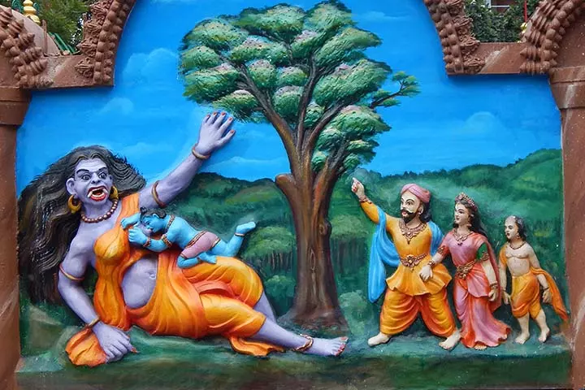
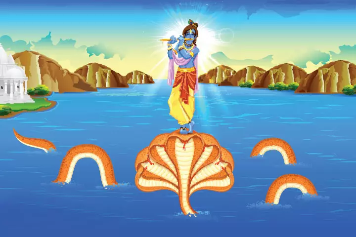
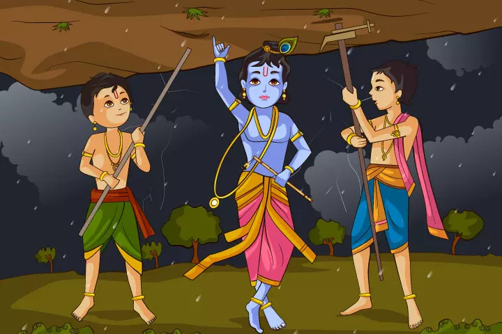

As per the Hindu epic Mahabharata, Lord Krishna was born to King Vasudeva and his wife Devaki. Devaki’s brother Kansa was a cruel man who engaged in heinous activities.
During Devaki and Vasudeva’s wedding rituals, Kansa is warned by the astrologers that their child would kill him. Hearing this, Kansa imprisons the couple and kills every child that is born them


Kansa, who knows that the eighth child born to Devaki, would be his slayer, sends his soldiers to find the infant. But as they return empty-handed, Kansa sends the Queen of Demons, Putana, to kill Lord Krishna.
She schemes to kill Lord Krishna by feeding him her poisoned breastmilk. Putana goes to Gokul, disguised as a beautiful maiden. She reaches Krishna’s home and nurses him with the poisoned milk. Even as she hopes to kill the infant Krishna, he sucks her life out of her breasts and kills her.

One day, when Krishna was playing with his friends, an enormous bull enters Vrindavan and begins to attack everyone. People run helter-skelter, creating a commotion. Just then, Krishna sees the bull and confronts it. He realizes that the bull is a demon named Arishtasura, sent by his uncle Kansa to kill him. He challenges Arishtasura to a fight and after a fierce battle, kills him. The soul leaves the body of the bull, bows to Krishna, and tells him how he was cursed to become a demon when he did not obey and respect his guru Lord Brihaspati.
One day, when Krishna was playing with his friends, an enormous bull enters Vrindavan and begins to attack everyone. People run helter-skelter, creating a commotion. Just then, Krishna sees the bull and confronts it. He realizes that the bull is a demon named Arishtasura, sent by his uncle Kansa to kill him. He challenges Arishtasura to a fight and after a fierce battle, kills him. The soul leaves the body of the bull, bows to Krishna, and tells him how he was cursed to become a demon when he did not obey and respect his guru Lord Brihaspati.

A giant black serpent, Kaaliya enters Vrindavan and begins living, along with his family, in the river Yamuna. Kaaliya slowly turns the river water poisonous with its venom, making the lives of villagers miserable. People try everything possible to get rid of the black
A giant black serpent, Kaaliya enters Vrindavan and begins living, along with his family, in the river Yamuna. Kaaliya slowly turns the river water poisonous with its venom, making the lives of villagers miserable. People try everything possible to get rid of the black